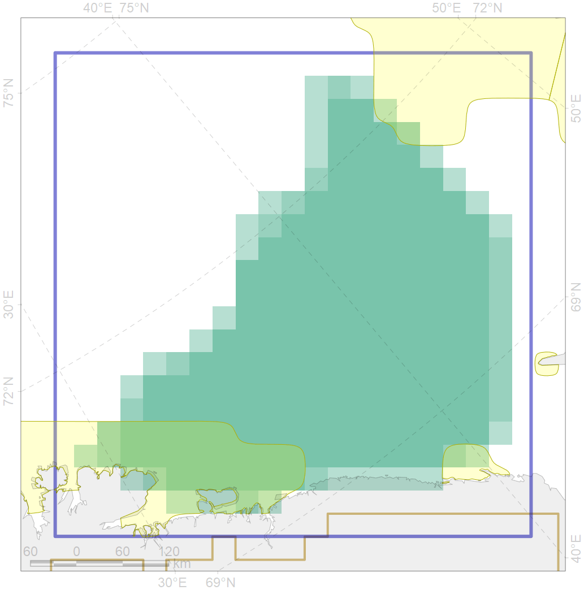
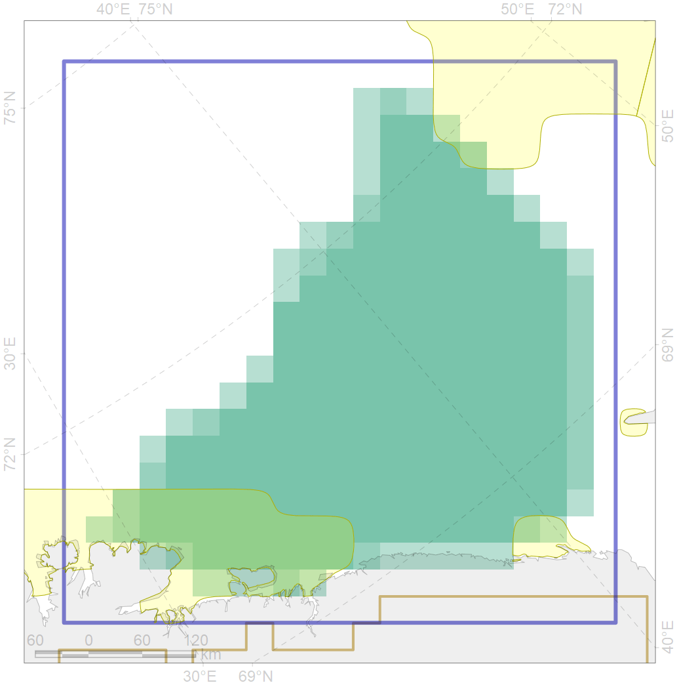

5053
![[]{style="display: none;"}](sbcd98191a.png) 

| CF code | 5053 |
| CF name | Harbour porpoise feeding areas in the Barents Sea |
| Time Period | 1987-2016 |
| Source(s) | NAMMCO; Klepikovsky 2017; Goryaev 2017 |
| Seasonality | January-December |
| Depth Horizon | 0-200 |
| Methodology | Ship surveys |
| Use Restrictions | |
| Author Name | Filatova |
| Notes | |
| Scenario’s Target | 0.12 |
| Target Achievement | 0.200 (Scenario: 167.0%) |
| PAC | Share of the Total Amount within the PAC | Share of the Target Achievement for the ArcNet | PAC’s Contribution to the Target Achievement |
|---|---|---|---|
| 21 | 0.3% | 2.3% | 1.4% |
| 25 | 0.3% | 1.5% | 0.9% |
| 27 | 11.4%11.7% | 84.4%87.2% | 50.6%52.2% |
| inner | 12.0%12.4% | 88.2%91.0% | 52.8%54.5% |
| outer | 88.0%91.8% | 78.8%109.6% | 47.2%65.6% |
| † supplement values are for area consistence whereas principal values are for Accenter compatible gridded stats |